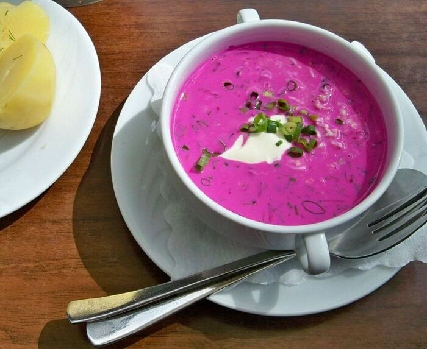
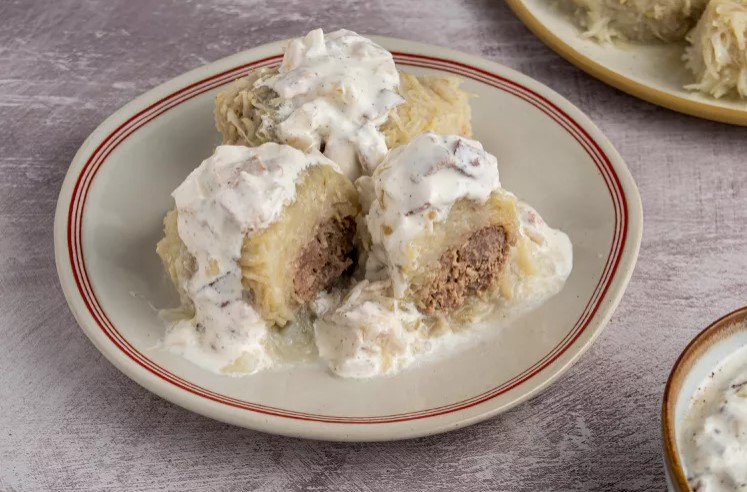
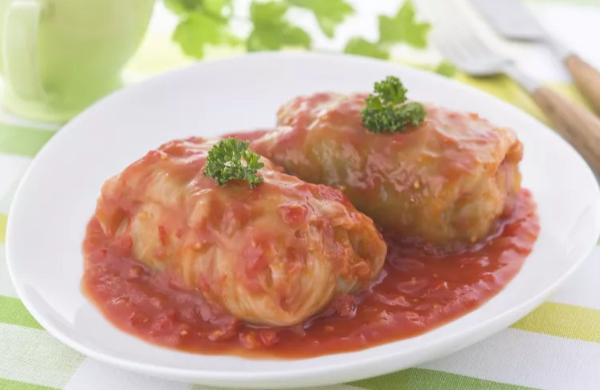
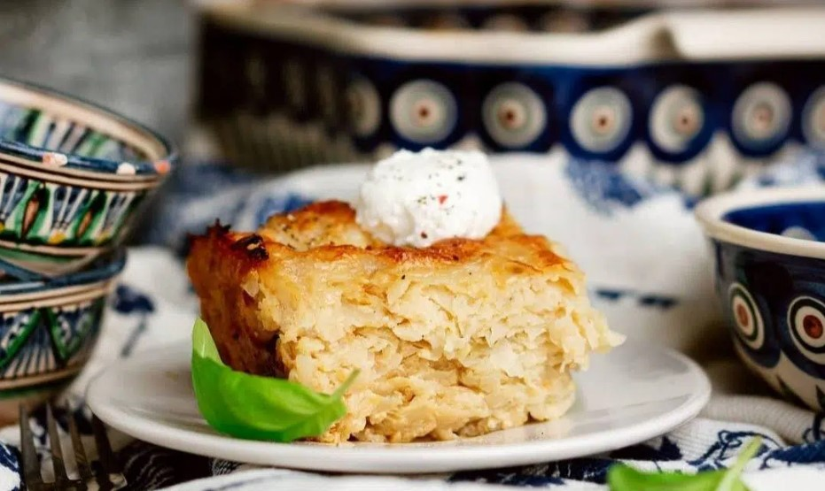

All Recipes

Saltibarsciai - Cold beetroot soup
The most visually memorable lithuanian dish, everyone should try
View Recipe

Cepelinai - Potato-Meat Dumplings
Hearty and rich dumplings take some time to make, but they are well worth the effort.
View Recipe

Balandeliai - Lithuanian Stuffed Cabbage
Bursting with flavor and tradition, these hearty cabbage rolls offer a delightful combination of tender cabbage leaves enveloping a savory pork and rice filling.
View Recipe

Kugelis - Potato Pudding
This traditional savory potato pudding with pork is extremely common holiday season food.
View Recipe
Duonos gira - Lithuanain kvass
A low- to no-alcohol drink made from fermented dark rye bread.
View Recipe